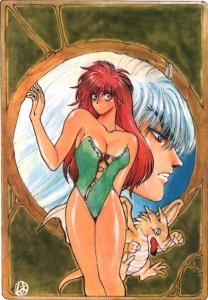

Bastard!

From the Anime Pocket Guide:
Cast:
Dark Schneider ............................... Kazuki Yao
Rushe Renren ........................... Yuriko Fuchizaki
Tiara Nort Yoko ............................. Yuka Koyama
Geo Nort Sort .............................. Nobuo Tanaka
Princess Sheila .......................... Konami Yoshida
Ninja Master Gara .......................... Tessho Genda
Efreet ...................................... Seizou Kato
Arshes Ney ................................... Rei Sakuma
Dai-Amon .................................. Shigeru Chiba
Abigail .............................. Ryuuzaburou Ohtomo
Kevi Dab ................................... Masaru Ikeda
Kai Harn ................................. Yuko Kobayashi
Karu Su .................................. Toshihiko Seki
Priest A ................................. Hideyuki Umezu
Shiin-Hari .............................. Wakana Yamazaki
The King of Metallicana .................... Jouji Yanami
Description:
Some time in the future, the world has become a desolute place.
Great sorceries have been discovered, and warlords conquer all
in their path. A mysterious magician named Abigail is in search
of the magical seals needed to reawaken a great demon. One of
the seals is located in the peaceful kingdom of Metallicana. In
desperation, Geo, the chief cleric, makes the decision to free
a dangerously powerful sorceror called Dark Schneider. 15 years
ago, Dark Schneider was conquering the world when he was stopped
by Geo and some other clerics and sealed in a little boy named
Rushe. Now Geo's daughter, Yoko, becomes the key to his freedom
(since she is still a virgin). Once he is free, Dark Schneider
can use his powers to save the kingdom. However, Dark Schneider
has different ideas of how he wants to use his newfound freedom.
This is a fantasy adventure which explores a world without our
concept of modern technology, but which has embraced the powers
of magic. It's also a story about Dark Schneider and how this
all-conquering sorceror has changed after 15 years of being
sealed inside a little boy who loves Yoko. Lots of action.
What the title has to do with anything is anyone's guess... :-)
Other Resources
Anime Video Game Resource Center © 1998 by Luis A. Cruz